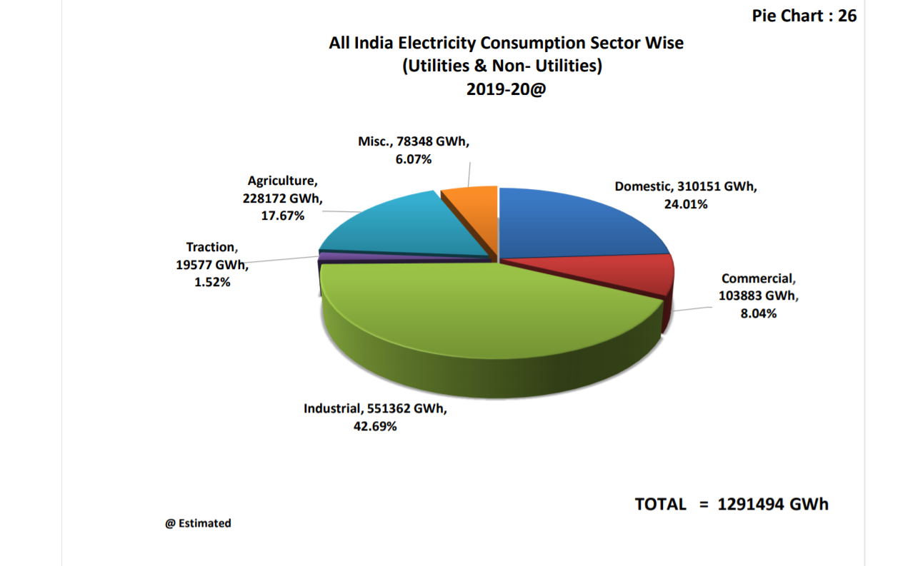

To help save energy
Being a developing country, power consumption has been increasing at greater pace in India. India’s energy sector is diversified compared to the rest of the World. Energy consumption growth rate in commercial buildings (8%) is more than that of Residential sector (5%) and floor area increase itself is expected to grow from 659 million m2 in 2010 to 1900 million m2 in 2030. But India is still in the nascent stage in energy conservation point of view in any of the sectors. As per the Prime Minister’s vision statement, Energy saving potential in Building sectors both commercial and Residential is 20% (NMEEE, Bureau of Energy) and shall achieve 10% of energy saving by 2022. Hence it is essential and crucial to focus the research on energy performance of the buildings.
Energy costs are soaring and your business can be at considerable risk if you do not take the guesswork out of your energy usage and the budget you need to cover it. Energy audits identify where your business is wasting energy. Energy Audit is the verification, monitoring, and analysis of the use of energy including submission of technical report containing recommendations for improving energy efficiency with cost-benefit analysis and an action plan to reduce energy consumption
Energy Audit needs to be done to identify Energy saving Opportunities in a facility or areas with excess use of Energy compared with set up standards. An energy audit is an effective tool for energy management to use Energy Effectively and Efficiently. The energy conservation measures help in saving energy and cutting cost in electricity cost of any building. For every unit of energy consumption, our environment suffers a loss in the form of pollution and reducing conventional energy resources, more generating capacity demand. Saving a unit of energy not only saves money but also saves the environment and energy sources.
We have developed a comprehensive methodology for analyzing your energy systems and provide a full report on your electricity consumption, annual spend and provide specific energy savings proposal along with invests and payback period.
The Audit is aimed at improving energy efficiency pf the building by aligning current consumption with current industry benchmarks
Evaluation and analysis of the current system along with industry set benchmarks is done
Heat can be avoided by using a thermal insulating material on the inside or the outside of
the walls/ceiling. XPS boards are good thermal insulators that can stop the heat flow from outside into
a room if put on the walls or ceiling. It can provide temperature reduction of about 5 oC if applied on
walls/ceilings that face the sun directly.
For Ceilings: These boards can be installed either as a terrace floor (over the deck installation) or as
a false ceiling (under the deck installation). Using these boards instead of POP false ceilings can help
save electricity as well as help in giving the right looks to a room. It is also quite easy to fabricate
and install. To make it look as per the room décor, wall putty and paint can be applied on it.
For Walls: The board can be installed either on interior or exterior of the walls without any problems.
Wall putty and paint can be applied on it to make it look as per the required décor.
White cooling paints are an established cooling technology that help bring down indoor temperatures and thus save the electricity used for air-conditioning in hot climates. white paint that can keep surfaces up to 18 degrees Fahrenheit cooler than their ambient surroundings – almost like a refrigerator does, but without consuming energy. The paint would not only send heat away from a surface, but also away from Earth into deep space where heat travels indefinitely at the speed of light. This way, heat doesn’t get trapped within the atmosphere and contribute to global warming
Window glazing is nothing but the window glass that is fitted in the window frames. In other words, it’s the glass pane part of your window. Most often, a single window glass is placed within the frame. This is done by a specialist called a glazier Double-glazed windows have two panes of glass fitted into a window frame. An inert gas like argon is filled between the two panes to increase insulation. Double glazed glass is perfect for Indian weather conditions, especially in North India where there are scorching summers and moderate winters. The double window panes not only provide relief from extreme temperatures outside, but also insulate your space from the noise outside. They are also very hard to break through and therefore provide you with ample security against intruders.
Wall, roof and floor insulation may be done by fixing insulation material to the wall, roof or floor, either on the inside of outside, e.g., by using insulation plates. Different materials for walls, roofs and floors require different types of insulation measures. Buildings may for example have cavity walls consisting of two 'skins' separated by a hollow space. This space already provides some insulation but can be filled up with additional insulation material, e.g., foam, to further improve the insulation effect. Roof insulation for flat roofs differs from insulation for steeper roofs. Floors are usually made of wood or concrete, each requiring specific insulation measures. Another option to reduce heat losses to the ground is soil insulation, for example by placing insulation material on the soil in a so-called “crawl space” (a very low basement). The age of a building is an important factor determining the type of insulation and the way in which it is installed, e.g., if insulation is put on the outside or inside of the construction Another insulation measure that reduces the amount of heat loss is sealing cracks in the ‘shell’ of the building. Cracks cause infiltration of cold air from outside or leakage of warm air to the outside. Strips or other material can be used to seal cracks in moving parts, such as windows and doors, and in places where different construction parts are attached to each other.
The idea is to connect devices, which in turn connect and talk through a centralized control unit, accessible by computers, tablets, and mobile phones. These include lights, appliances, electrical outlets, and heating and cooling systems, but also alarms, doors, windows, smoke detectors, surveillance cameras, and many other sensors and devices. For example, home automation users can turn the lights on or off at specific times each day, adjust the heater or air conditioner to turn on a few minutes before they arrive home, or turn on all the lights in their home when the security system alarm is triggered. In addition to these immediate effects, monitoring applications can also provide accurate home information by generating detailed reports on equipment that could be working better or spending less. As systems such as Google Home, Alexa, and Amazon Echo become more and more common and artificial intelligence becomes more and more sophisticated, the integration of diverse applications in residential spaces should increasingly enter our daily lives through the Internet of Things (commonly referred to as IoT). That is, in addition to smartphones and personal computers, appliances and sensors are able to identify patterns, process information, and perform tasks both through commands and automatically
A Building Management System (BMS), sometimes called a Building Automation System (BAS), is
a computer-based system installed to control and monitor a building's electrical equipment such as
ventilation, lighting, energy, fire systems, and security systems. It consists of software and hardware.
A BMS is crucial to managing demand for energy in a cost-effective way and essential to all new builds.
It allows owners and landlords of buildings to reduce energy costs and provide optimum comfort for
users, tenants and residents of the buildings. It allows remote management of heating, ventilation and
air conditioning (HVAC) so that maintenance staff do not have to spend time visiting each building or
room to shut down, switch on or adjust temperature levels or air conditioning.